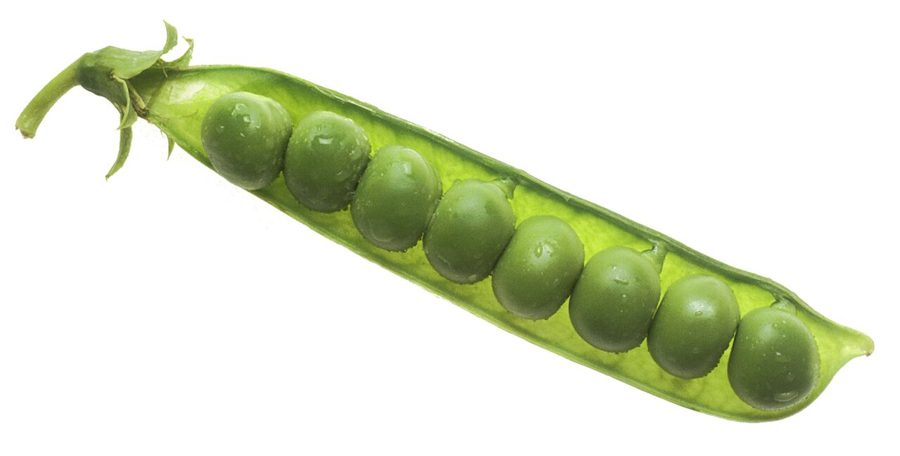

मटरPea
Pisum sativum · Fabaceae · FLR-0143

- Scientific name
- Pisum sativum L.
- Family
- Fabaceae
- Hindi
- मटर
- Status here
- cultivated
- IUCN
- not evaluated
When to look कब देखें
Expected mainly in January, February, March, April, October, November, December.
Uses and possibilities उपयोग और संभावनाएँ
Drawn from the documented uses in the profile below, where each is labelled traditional, current or a research lead. All uses →
मटर / Pea
Pisum sativum L. — Fabaceae
मटर — गर्मियों के अलावा पूरे भारत की सबसे महत्वपूर्ण सब्जी, और पूर्वी उत्तर प्रदेश में शीत ऋतु की मुख्य फसल। बेल या झाड़ी जैसा पौधा, एक-डेढ़ मीटर तक ऊँचा, हरी पत्तियाँ, छोटे-छोटे सफेद, गुलाबी, या बैंगनी फूल। सबसे महत्वपूर्ण हिस्सा हरी फली है जिसमें गोल, मीठे, हरे दाने होते हैं। ये दाने उबालकर, तलकर, या दाल बनाकर खाते हैं। मटर की सब्जी बस्ती का हर घर जानता है, और कोई भी पारंपरिक व्यंजन मटर के बिना पूरा नहीं माना जाता।
Quick Identification त्वरित पहचान
| Feature | Description |
|---|---|
| Plant height | 0.3–1.5 m, erect or trailing, with tendrils |
| Stems | Angled, hollow, green, with axillary tendrils |
| Leaves | Compound, pinnate, with a terminal tendril; leaflets ovate, toothed margins |
| Flowers | Papilionaceous, white, pink, or purple; in clusters or single flowers in leaf axils |
| Pods | Linear, 5–10 cm, containing 5–10 round seeds (peas) |
| Seeds (peas) | Round, green when fresh, yellow when dry; smooth or wrinkled depending on variety |
Field tip: Walk through a winter vegetable field in December. Look for medium-height plants with feathery compound leaves ending in curled tendrils. Clusters of white, pink, or purple flowers appear at branch tips. Beneath the flowers are plump green pods containing round peas.
Morphology आकारिकी
Biometrics (typical measurements for Indian varieties):
| Measurement | Range |
|---|---|
| Plant height | 0.3–1.5 m |
| Leaf length | 10–20 cm |
| Leaflet | 3–6 × 2–4 cm |
| Flower diameter | 1.5–2.5 cm |
| Pod length | 5–10 cm |
| Pod width | 1–1.5 cm |
| Pea diameter | 5–8 mm |
Stems: Angled, hollow, green, producing axillary tendrils from the petiole, which grasp nearby plants or stakes for support. Some varieties are bushy with short internodes; others are tall and trailing.
Leaves: Compound, pinnate, with an even number of leaflets (2–4 pairs) and a terminal tendril. Leaflets are ovate, with a light green color and toothed margins. The petiole is winged (has a flat blade running along its length).
Flowers: Papilionaceous (butterfly-shaped), the defining feature of Fabaceae. Color varies by variety: white, pink, purple, or bicolor. The flower is pollinated by insects and also self-pollinates. Flowering is prolific, and a single plant can produce dozens of flowers.
Pods: Linear, slightly curved, green in the edible stage, drying to tan or brown. The interior wall (endocarp) is thin. Each pod contains 5–10 round seeds (peas).
Seeds: Smooth or wrinkled (depending on variety), green when immature, turning yellow or brown when dried. The seed coat is thin; germination is rapid when soil is moist and warm.
हिंदी: पत्ती पंख जैसी, बेल पकड़ने वाली। फूल सफेद, गुलाबी, या बैंगनी। फली में गोल, मीठे दाने।
Behaviour & Ecology व्यवहार और पारिस्थितिकी
A cool-season legume of Mediterranean origin, Pisum sativum is now cultivated globally in temperate and cool tropical regions. In India, it is an important Rabi (winter) crop. The plant fixes nitrogen through root nodules, enriching the soil. In traditional crop rotations, peas follow a cereal crop (e.g., rice or wheat), restoring soil fertility.
The plant is determinate or indeterminate depending on variety. Determinate (bush) types are 0.3–0.6 m and require minimal support; indeterminate (trailing) types reach 1–1.5 m and benefit from stakes or trellises. Most commercial and home-garden varieties in eastern UP are semi-determinate, requiring modest support.
The crop thrives in well-drained soils with cool nights and moderate day temperatures (12–18°C optimal). Too much nitrogen promotes vegetative growth at the expense of flowering.
हिंदी: मटर ठंड में पनपता है। नाइट्रोजन मिट्टी में बढ़ाता है, इसलिए दूसरी फसलों के लिए अच्छा साथी है।
Life Cycle / Phenology जीवन चक्र
| Month / Season | Event |
|---|---|
| September–October | Field preparation; sowing of seeds |
| October–November | Germination; establishment; vine growth and tendril climbing |
| November–December | Vegetative growth; flower initiation |
| December–January | Flowering; pollination; pod set |
| January–March | Pod maturation; pea size increase; harvest |
| March onwards | Plant senescence; final harvest; drying for seed |
From sowing to first harvest: 60–90 days, depending on variety and temperature. A productive plant yields 100–200 g of fresh pods.
हिंदी: अक्टूबर-नवंबर में बीज बोते हैं, दिसंबर में फूल आते हैं, जनवरी-मार्च में तोड़ते हैं।
Cultivation Calendar कृषि कैलेंडर
| Stage | Month(s) |
|---|---|
| Field preparation | September–October |
| Seed sowing | October–November (direct seeding or transplants) |
| Germination and establishment | October–November |
| Vegetative growth; trellising if needed | November–December |
| Flowering and pod set | December–January |
| Pod filling and maturation | January–March |
| Green harvest (tender pods) | December–February |
| Dry harvest for seed | February–March |
Associated Species / Interactions संबंधित प्रजातियाँ
- Nitrogen fixation: Beneficial association with rhizobial bacteria in root nodules.
- Crop rotation: Often follows rice (Paddy) or is grown with Wheat.
- Intercropping: Sometimes grown with Onion, Potato, or small grains.
Pests and Diseases कीट और रोग
- Pea aphid: Acyrthosiphon pisum; sucks sap from growing shoots; causes stunting.
- Powdery mildew: Erysiphe pisi; white coating on leaves in cool, humid conditions.
- Leaf spots: Various fungal pathogens cause spotting; more severe in wet years.
- Root rot: Fusarium and Phytophthora in waterlogged soils.
- Seed-borne viruses: Pea seed-borne mosaic virus (PSbMV); managed through certified seed.
Agricultural / Human Relevance कृषि प्रासंगिकता
Vegetable use. Fresh peas are eaten as a vegetable — the immature pods with tender peas are picked and cooked whole, or the individual peas are shelled and cooked. The flavor is sweet and the texture is tender. Peas are a staple in Indian cuisine.
Culinary traditions:
- Matar ki sabzi: A cooked curry, often with potato or tomato.
- Litti-chokha: Often served with whole wheat cakes filled with spiced mashed peas.
- Pea pilaf: Cooked with rice and spices.
- Pea soup: A traditional comfort food.
Nutritional value. Fresh peas are rich in vitamin C, folate, and fiber. Dried peas (dals) are a protein source. Peas are among the most nutritious of vegetables.
Nitrogen and soil fertility. As a legume, peas restore soil nitrogen, making them valuable in organic farming systems. A pea crop can provide 40–60 kg/ha of nitrogen to the subsequent crop.
Livelihoods and trade. Fresh peas are sold in local vegetable markets. Dried peas are sold to processors for canning or export. Pea straw (the dried plant) is used as fodder.
Seed production. Selected farmers grow pea for seed, which is saved and replanted or sold to other farmers.
Common varieties in eastern UP: Arkels, Badami, Pusa Pragati (dwarf), Sugar Snap (tall, edible pods), and traditional local varieties.
हिंदी: मटर के दाने पोषक होते हैं। मिट्टी को नाइट्रोजन देते हैं। किसान अपने बीज भी बचा लेते हैं।
Expected Locally स्थानीय रूप से अपेक्षित
Not a field record. Written from published accounts for eastern Uttar Pradesh. No confirmed local sighting yet — if you have seen it, that is what the atlas needs.
अभी तक स्थानीय पुष्टि नहीं। यह विवरण प्रकाशित स्रोतों से है, किसी अवलोकन से नहीं।
Cultivated throughout Basti district as a winter vegetable crop. Fields are visible in every village block from October to March. Fresh peas are sold in all local vegetable markets and are central to the winter diet.
Distribution वितरण
Global range: Native to the Mediterranean and western Asia; now cultivated globally in cool temperate regions.
In India: Cultivated in all states, with major production in Punjab, Himachal Pradesh, and Uttar Pradesh.
In Uttar Pradesh: Widely cultivated; one of the principal winter vegetables.
In Basti district / eastern UP: Cultivated resident; common winter crop in all agricultural blocks.
Research Questions शोध प्रश्न
Anyone can investigate these | कोई भी इन प्रश्नों की जाँच कर सकता है
- What varieties of pea are grown in your area, and which is most popular? / आपके इलाके में कौन-कौन सी किस्में उगती हैं? — Interview 10 farmers; note names, heights, and yields.
- How many pods does a plant typically produce? — Mark 10 plants and count all pods harvested from each.
- Do pea aphids appear in local fields? — During December–January, examine leaf undersides for small green insects; count affected plants.
- How much nitrogen is added to soil after a pea crop? — Have soil tested before and after a pea crop; compare results.
- Which traditional pea dishes are most popular in your community? / आपके इलाके में मटर के कौन-कौन से पारंपरिक व्यंजन हैं? — Interview cooks and elders; document recipes.
Similar Species मिलती-जुलती प्रजातियाँ
| Species | How to tell apart | हिंदी |
|---|---|---|
| Chickpea / Gram (Cicer arietinum) | Smaller plants (0.3–0.5 m); no tendrils; leaflets are smaller and more numerous; pods contain 1–2 angular seeds | चना — छोटा, बिना बेल, छोटे बीज |
| Lentil (Lens culinaris) | Smaller (0.3–0.5 m); tiny leaflets; very small pods | मसूर — बहुत छोटा पौधा |
| Broad bean / Fava bean (Vicia faba) | Larger leaflets (5–10 cm); no tendrils; large flat pods; large angular seeds | बाकला — बड़ी पत्ती, बड़े बीज |
Field rule: A cool-season legume with compound pinnate leaves ending in tendrils, white/pink/purple papilionaceous flowers, and linear pods containing round green peas is Pisum sativum.
Taxonomy & Classification वर्गीकरण
Original description. Carl Linnaeus described Pisum sativum in 1753 in Species Plantarum. The genus name Pisum is the classical Latin name for pea. The specific name sativum means "cultivated."
Subspecies. Monotypic as a species, but with hundreds of cultivars differing in height, pod type, seed color, and maturity time.
Family and order placement. Fabaceae, order Fabales. The family includes all legumes — peas, beans, lentils, chickpeas, and nitrogen-fixing trees.
Phylogenetic notes. Pisum sativum is closely related to Pisum fulvum (a wild species) and other Mediterranean Pisum species. The cultivated form is derived from selection of wild Pisum ecotypes.
IUCN status rationale. Not evaluated. As a domesticated crop, it is not assessed for extinction risk.
Photo Gallery फोटो गैलरी
Photos needed आवश्यक फोटो
- [ ] Whole plant showing stems, leaves, tendrils, and flowers
- [ ] Close-up of flowers showing the papilionaceous form
- [ ] Fresh green pods with peas visible inside
References संदर्भ
- Linnaeus, C. (1753). Species Plantarum. Laurentii Salvii, Stockholm, vol. 1, p. 727.
- Hooker, J.D. (1879). Flora of British India, vol. 2. L. Reeve & Co., London.
- Biswas, K. (1950). The Flora of India, vol. 2. Oxford Book & Stationery Co., Calcutta.
- Singh, G. & Jain, A. (2005). Vegetable Production and Technology. Kalyani Publishers, New Delhi.
- Sharma, R. & Thakur, V. (2012). Pulses and Legume Crops in Eastern India. Indian Journal of Agricultural Sciences, 82(3): 224–232.
- GBIF Occurrence Data — Pisum sativum, India (2015–2026).
Source file: species/flora/crops/pea.md